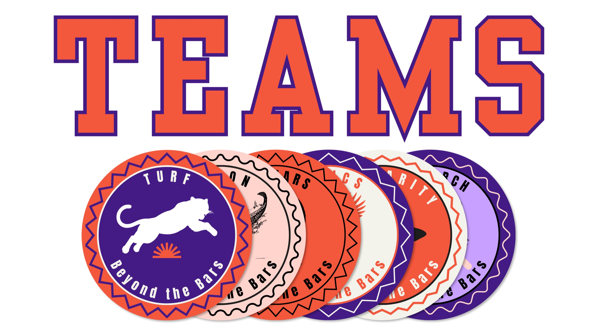
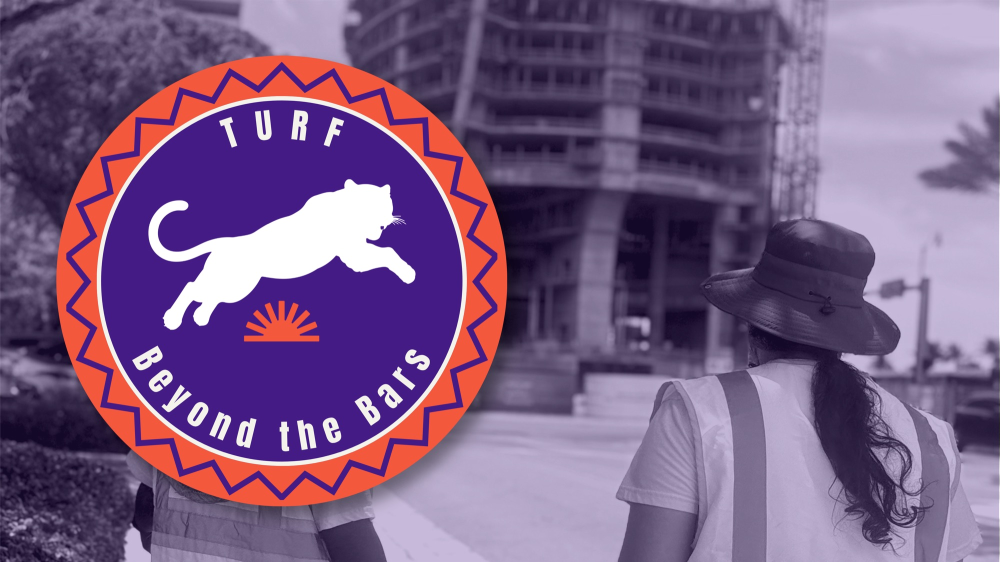
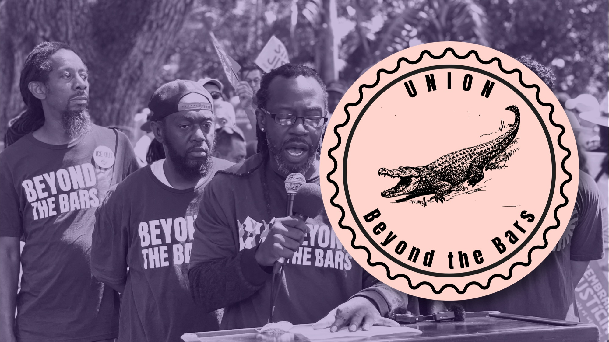
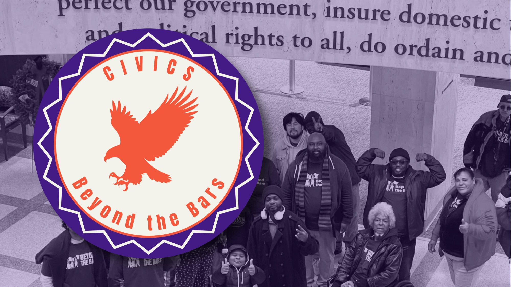
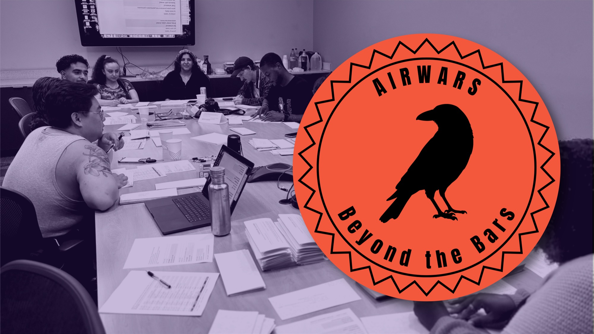
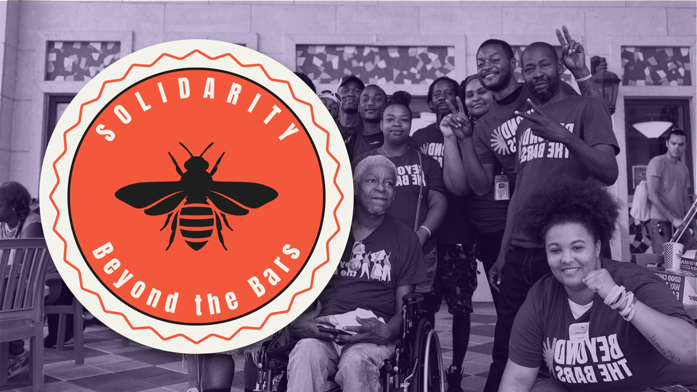
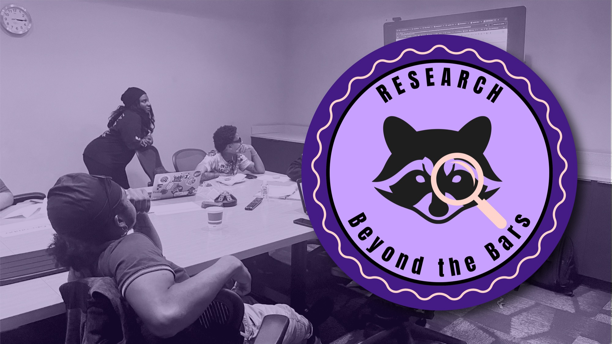

Member-led, team-powered
Beyond the Bars is member-led. Across six teams, members take responsibility for organizing worksites, building pathways into union careers, shaping policy and public narrative, supporting one another, and producing the research our campaigns need to win.

Turf
The Turf Team is on the ground where the work is happening: construction sites and labor pools. We conduct direct outreach and site assessments across South Florida’s construction industry, building relationships with workers site by site, tracking labor conditions, and connecting workers to Beyond the Bars to fight bad bosses and a broken system. Our goal is to have boots on the ground everywhere our members are working, so no temp worker with a record has to organize alone.
Union
Beyond the Bars is uniquely positioned to address the systemic labor barriers facing people in prison and people returning home by building stronger relationships with unions and pathways into good union jobs. The Union Team is developing a pre-apprenticeship program in Miami-Dade prisons that will help participants earn industry-recognized certifications and prepare for long-term union careers after release. Through research, strategic partnerships, apprenticeship pipelines, organizing, and education, the team connects justice-impacted people to the broader labor movement.


Civics
The Civics Team brings together members and allies committed to building political power and driving systemic change. Through political education, we break down how government works so our community can step up, speak out, and use its levers to claim power. At the local, county, and state levels, we defend the rights of temp workers with records, advance policies that improve their lives, and fight policies that cause harm. We make sure our members’ voices are heard wherever decisions are made.
AirWars
The story of labor and incarceration must be told by workers themselves. The AirWars Team is the arts and communications engine of Beyond the Bars, producing member-led storytelling and cultural programming and shaping how that work reaches the public—including Cages & Wages, our exhibition on incarceration and labor. Our cultural organizing develops spokespeople and storytellers across every team, so members can speak about the work with clarity, confidence, and in their own voices. We build the narrative and creative infrastructure that puts workers at the center and turns lived experience into public power.


Solidarity
Beyond the Bars knows that the first weeks after release are often the most dangerous: no income, no transportation, and a system built to send people back inside. The Solidarity Team provides mutual aid and collective care for members navigating reentry, from court dates and job interviews to basic needs like food and clothing. We build the trust and material support that allow members to show up for organizing and for one another. Our goal is to make sure no member has to choose between surviving today and building power for tomorrow.
Research
The Research Team builds the knowledge our campaigns need. We investigate South Florida’s construction industry, mapping projects, labor practices, financial relationships, and the developers, contractors, and labor pools that shape conditions on the ground. By combining worker knowledge with public records and industry data, the team gives members reliable information for organizing, advocacy, and decision-making. Our goal is to identify which Miami developers are committed to worker safety, job quality, and the long-term well-being of South Florida’s temp construction workforce—and which are falling short.
